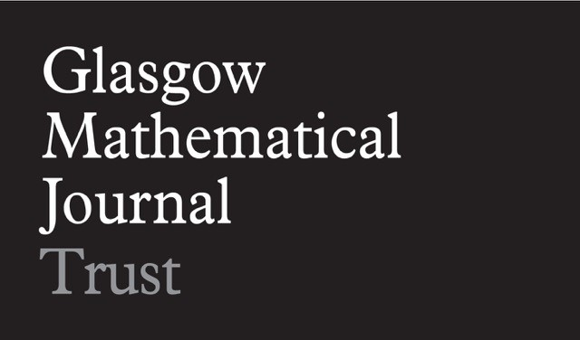

Alejandra GarridoUniversidad Complutense de Madrid, ICMAT |
Armando MartinoUniversity of Southampton |
Jim BelkUniversity of Glasgow |
All talks will be held in Theatre B of the Mathematical Institute, St Andrews KY16 9SS (map).
| 1.00 – 2.00 pm: Alejandra Garrido, Simple totally disconnected locally compact groups. |
| 2.15 – 3.15 pm: Armando Martino, What is the probability that two elements of a group commute? |
| 3.15 – 3.45 pm: Tea |
| 3.45 – 4.45 pm: Jim Belk, TBA. |
| 5.30 pm: Dinner at Zizzi's. |
Please email Colva Roney-Dougal by 7 May if you plan to attend dinner. The dinner will be at Zizzi. We expect to be able to partially cover the cost of dinner for postgraduate students and early career researchers.
Alejandra Garrido, Universidad Complutense de Madrid, ICMAT
Over the last couple of decades, much progress has been made on the theory of totally disconnected locally compact groups and it has become important to study the class S of those that are moreover simple, generated by a compact subset, and not discrete. Examples include the projective special linear groups over p-adic rationals, the group of orientation-preserving automorphisms of a regular tree, and Neretin's group of almost automorphisms of a regular tree. The latter group can be considered an non-discrete analogue of the Higman-Thompson groups and is also a full group.
Full groups of homeomorphisms of Cantor space are a rich source of infinite simple groups. I will report on joint work with Colin Reid in which sufficient conditions are given for a full group to be totally disconnected locally compact and to contain an open subgroup that is in the class S. This construction accounts for all groups in one of the five types of groups in S, up to local isomorphism (the totally disconnected analogue of having the same Lie algebra).
Examples will be given. No knowledge of topological groups will be assumed on the part of the audience.
Armando Martino, University of Southampton
This is mostly joint work with Motiejus Valiunas but concerns a range of questions that I have thought about for a little time and will also mention the work of Yago Antolin, Matthew Tointon and Enric Ventura.
This will be a recap of various results and possible methods for assigning a probability to a group, measuring the event that two elements commute. I will quickly recap a classical result from finite groups, then move on to residually finite groups and amenable groups before outlining a new method for calculating this probability via what we call "coset correct means". A coset correct mean is a function that assigns to each subset of a group a number between 0 and 1, which is finitely additive, assigns 1 to the whole group and gives the "correct" answer for any coset of any subgroup (that number being the reciprocal of the index of the subgroup). I will outline the construction of these coset correct means.
The main result in these contexts is that the probability that two elements of a group commute is non-zero exactly when the group itself admits a finite index abelian subgroup - when it is virtually abelian.
Jim Belk, University of Glasgow
TBD
The North British Geometric Group Theory Seminar is a collaborative seminar that has been running since 2003. The seminar involves geometric group theorists from Heriot–Watt, Glasgow, Newcastle, Durham, York, Leeds, Manchester, Nottingham, St Andrews, and Leicester, and meets three times a year.
We are very grateful for financial support from the London Mathematical Society and the Glasgow Mathematical Journal Learning and Research Support Fund.
